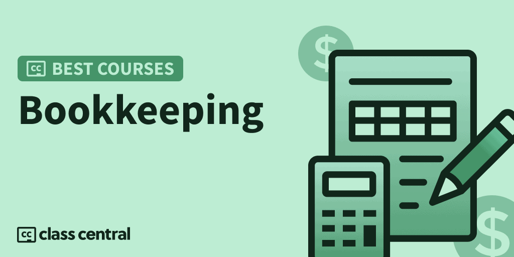

2023 में लेने के लिए 10 सर्वश्रेष्ठ बहीखाता पाठ्यक्रम
सर्वोत्तम बहीखाता पद्धति ऑनलाइन पाठ्यक्रमों के साथ अपनी वित्तीय क्षमता को अनलॉक करें और अपने बहीखाता पद्धति के कौशल को अगले स्तर पर ले जाएं।

चाहे आप अपना खुद का व्यवसाय शुरू कर रहे हों, वित्त में काम कर रहे हों या करियर में उन्नति की तलाश कर रहे हों, बहीखाता पद्धति एक मूल्यवान कौशल है। बहीखाता पद्धति आपके वित्त का रिकॉर्ड रखने के अलावा और कुछ नहीं है। यदि आप यही सीखना चाहते हैं, तो पढ़ना जारी रखें!
इस गाइड में, मैंने आपके लिए 10 सर्वश्रेष्ठ मुफ़्त और सशुल्क बहीखाता पद्धति ऑनलाइन पाठ्यक्रम चुने हैं145+ बहीखाता पाठ्यक्रमहमारे कैटलॉग पर एक अच्छी तरह से परिभाषित कार्यप्रणाली का पालन करके जिसे आप नीचे पा सकते हैं।
लेकिन अगर आप सीधे नतीजों पर जाना चाहते हैं, तो यहां मेरी शीर्ष 10 पसंद हैं। संबंधित खंड पर जाने के लिए आप पाठ्यक्रम पर क्लिक कर सकते हैं:
| अवधि | कार्यभार | संक्षिप्त |
| 1.बहीखाता पद्धति नींव और उन्नत तकनीकें (लिंक्डइन लर्निंग) | 2-4 घंटे | बहीखाता पद्धति में महारत हासिल करने के लिए नौसिखियों और मध्यवर्ती शिक्षार्थियों के लिए सर्वोत्तम पाठ्यक्रम |
| 2.बहीखाता पद्धति का परिचय (ACCA) | 60-80 घंटे | शुरुआती और मध्यवर्ती शिक्षार्थियों के लिए व्यापक बहीखाता पाठ्यक्रम |
| 3.तीन भागों में बहीखाता पद्धति की मूल बातें (उदमी) | 11-14 घंटे | बहीखाता पद्धति में महारत हासिल करने के लिए शुरुआती और मध्यवर्ती शिक्षार्थियों के लिए तीन पाठ्यक्रम श्रृंखला |
| 4.लेखा और बहीखाता मास्टरक्लास - शुरुआती से उन्नत (उदमी) | 14 घंटे | लेखांकन और बहीखाता पद्धति में महारत हासिल करने के लिए शुरुआती-अनुकूल पाठ्यक्रम |
| 5.90 मिनट में क्विकबुक ऑनलाइन - बहीखाता पद्धति और लेखा के लिए (उदमी) | 1-2 घंटे | क्विकबुक ऑनलाइन पर केंद्रित बहीखाता पद्धति सीखने के लिए नौसिखियों के लिए लघु पाठ्यक्रम |
| 6.बहीखाता पद्धति की मूल बातें समझाई गईं (बहीखाता और लेखा) (उदमी) | 4-5 घंटे | बहीखाता पद्धति की मूल बातें सीखने के लिए नौसिखियों के लिए बढ़िया कोर्स |
| 7.प्रभावी बहीखाता पद्धति और पेरोल (उदमी) | 14 घंटे | बहीखाता पद्धति सीखने के लिए नौसिखियों के अनुकूल पाठ्यक्रम, लेखांकन के बुनियादी ज्ञान की आवश्यकता है |
| 8.शिल्पकारों के लिए बहीखाता पद्धति (क्रिएटिवलाइव) | 9-10 घंटे | शिल्पकारों के लिए बहीखाता पाठ्यक्रम वित्त प्रबंधन के मूल सिद्धांतों को सीखने के लिए |
| 9.QuickBooks ऑनलाइन-बहीखाता व्यवसाय-आसान तरीका (उद्यमी) | 14 घंटे | QuickBooks ऑनलाइन पर केंद्रित बहीखाता पद्धति सीखने के लिए शुरुआती-अनुकूल पाठ्यक्रम |
| 10.बहीखाता मूल बातें (Intuit) | 16 घंटे | शुरुआती लोगों के लिए क्विकबुक के डेवलपर्स से बहीखाता पद्धति सीखने का अच्छा कोर्स |
बहीखाता पद्धति क्या है?
बहीखाता पद्धति किसी व्यक्ति या व्यवसाय की वित्तीय जानकारी को दर्ज करने का अभ्यास है, और इसका हिस्सा हैलेखांकनप्रक्रिया। दिन-प्रतिदिन के वित्तीय लेनदेन जैसे राजस्व, कर, ब्याज, ऋण और अन्य को रिकॉर्ड और संग्रहीत किया जा सकता है, और दस्तावेज़ीकरण की सटीकता और दक्षता संगठन के समग्र वित्तीय स्वास्थ्य को निर्धारित करती है।
बहीखाता पद्धति वह व्यक्ति है जिसे संगठन द्वारा बहीखाता पद्धति के कार्यों को करने के लिए नामित किया जाता है। अनुसंधान से पता चलता है कि खाते रखने के तरीके इतिहास में बहुत पहले से मौजूद हैं2600 ईसा पूर्वजब बेबीलोनवासी मिट्टी की शिलाओं पर अभिलेख लिखते थे। हालाँकि, अधिकांश व्यवसाय आज बहीखाता पद्धति के लिए कंप्यूटर-आधारित विधियों का उपयोग करते हैं जैसे कि एक साधारण स्प्रेडशीट या अधिक उन्नत सॉफ़्टवेयर।
बहीखाता कौशल क्यों महत्वपूर्ण हैं?
छोटे व्यवसायों के उदय और वित्तीय प्रबंधन के बढ़ते महत्व के साथ लेखाकारों के लिए नौकरी बाजार बढ़ने की उम्मीद है। क्लाउड कंप्यूटिंग और ऑटोमेशन सहित मजबूत तकनीकी कौशल वाले बुककीपर्स की बहुत मांग है और वे डेटा विश्लेषण के माध्यम से अतिरिक्त मूल्य की पेशकश कर सकते हैं।
मुनीम का वेतन देश, स्थान और कंपनी के आकार के अनुसार बहुत भिन्न होता है।अमेरिका में, औसत प्रति घंटा वेतन $20.66 है, औरब्रिटेन में, औसत वेतन £ 25,000 है। कनाडा में, औसत वेतन $40,000 से $60,000 तक है, जबकिऑस्ट्रेलिया मै, यह $50,000 से $70,000 तक है।न्यूजीलैंड में, औसत वेतन NZD 50,000 है। नौकरी की जिम्मेदारियों, अनुभव और स्थान के आधार पर वेतन भिन्न हो सकता है।
बहीखाता पद्धति के साथ मेरा अनुभव क्या है?
मैं एक हूँनिर्देशित परियोजना प्रशिक्षकऔर कौरसेरा में एक बीटा टेस्टर, आधिकारिक रूप से लॉन्च होने से पहले कई पाठ्यक्रमों का परीक्षण कर चुका है। मैंनें ले लिया है50 से अधिक ऑनलाइन पाठ्यक्रमविभिन्न विषयों में।
एक ऑनलाइन शिक्षार्थी और शिक्षक के रूप में मेरे अनुभव ने मुझे एक ऑनलाइन पाठ्यक्रम में क्या देखना है, इस पर कुछ परिप्रेक्ष्य दिया है। इस सूची में प्रत्येक पाठ्यक्रम का मूल्यांकन करने के लिए मैंने अपने अनुभव का उपयोग किया।

पाठ्यक्रम रैंकिंग पद्धति
मैंने पिछली रैंकिंग में उपयोग की गई अब आजमाई हुई कार्यप्रणाली के बाद यह रैंकिंग बनाई है (आप उन सभी को यहाँ पा सकते हैं). इसमें तीन चरणों वाली प्रक्रिया शामिल है:
- शोध करना:मैंने क्लास सेंट्रल के डेटाबेस का लाभ उठाकर शुरुआत की100K ऑनलाइन पाठ्यक्रमऔर 200K+ समीक्षाएं। फिर, मैंने प्रारंभिक चयन किया145+ बहीखाता पाठ्यक्रमरेटिंग, समीक्षा और बुकमार्क द्वारा।
- मूल्यांकन करना:मैं क्लास सेंट्रल, रेडिट, और पाठ्यक्रम प्रदाताओं पर समीक्षाओं के माध्यम से यह समझने के लिए पढ़ता हूं कि अन्य शिक्षार्थियों ने प्रत्येक पाठ्यक्रम के बारे में क्या सोचा और इसे एक के रूप में अपने स्वयं के अनुभव के साथ जोड़ा।सिखाने वाला.
- चुनना:अच्छी तरह से बनाए गए पाठ्यक्रमों को चुना गया था यदि वे मूल्यवान और आकर्षक सामग्री प्रस्तुत करते हैं और उन्हें मानदंडों के एक सेट में फिट होना पड़ता है और तदनुसार रैंक किया जाता है: व्यापक पाठ्यक्रम, रिलीज की तारीख, सामर्थ्य, रेटिंग और नामांकन।
अंतिम परिणाम पाठ्यक्रमों का एक अनूठा चयन है जो एक दशक के क्लास सेंट्रल डेटा और एक ऑनलाइन शिक्षार्थी के रूप में मेरे अपने अनुभव को दोनों दुनिया के सर्वश्रेष्ठ प्राप्त करने का प्रयास करने के लिए जोड़ता है। अब तक, मैंने इस सूची को बनाने में 12 घंटे से अधिक का समय लगाया है, और मैं इसे अपडेट करना जारी रखूंगा।
पाठ्यक्रम रैंकिंग सांख्यिकी
इस कोर्स रैंकिंग के संबंध में कुछ आंकड़े इस प्रकार हैं:
- संयुक्त रूप से, इन पाठ्यक्रमों ने अर्जित किया है466.qqनामांकन।
- 2 कोर्स हैंमुक्तयाफ्री-टू-ऑडिटऔर 8 पाठ्यक्रम हैंचुकाया गया.
- रैंकिंग में सबसे अधिक प्रतिनिधित्व वाला कोर्स प्रदाता हैUdemy, 6 पाठ्यक्रमों के साथ।
- सभी 10 पाठ्यक्रम अंग्रेजी में हैं।
- बहीखाता विषयक्लास सेंट्रल कैटलॉग में 145 से अधिक पाठ्यक्रमों के लिए खाते।
तो आगे की हलचल के बिना, सर्वश्रेष्ठ बहीखाता पद्धति ऑनलाइन पाठ्यक्रमों के लिए मेरी पसंद पर आते हैं।
1. बहीखाता नींव और उन्नत तकनीकें (लिंक्डइन लर्निंग)

सर्वश्रेष्ठ बहीखाता ऑनलाइन पाठ्यक्रम के लिए मेरी पहली पसंद लिंक्डइन लर्निंग पर जिम स्टाइस और के स्टाइस द्वारा पेश किए गए दो पाठ्यक्रमों का एक संग्रह है।
आप जो दो पाठ्यक्रम ले रहे हैं वे हैं:
पहला पाठ्यक्रम बहीखाता पद्धति और वित्तीय विवरण निर्माण की मूल बातें सिखाता है जबकि दूसरा पाठ्यक्रम वित्तीय प्रविष्टियों के प्रबंधन के लिए उन्नत लेखा रणनीतियों पर केंद्रित है। दोनों पाठ्यक्रमों को पूरा करने के बाद, आपने व्यवसाय या संगठन के वित्तीय रिकॉर्ड को प्रभावी ढंग से प्रबंधित करने के लिए आवश्यक आवश्यक कौशल और ज्ञान विकसित कर लिया होगा।
आप क्या सीखेंगे
पाठ्यक्रम में, आप वित्तीय विवरणों के बारे में जानेंगे, जिसमें बैलेंस शीट, आय विवरण और नकदी प्रवाह का विवरण शामिल है। आप बहीखाता प्रक्रिया में चार चरणों के बारे में भी जानेंगे: नियमित बहीखाता पद्धति, लेन-देन का विश्लेषण करना, लेन-देन को वर्गीकृत करने के लिए खातों का उपयोग करना और राजस्व, व्यय और लाभांश के साथ सावधानी बरतना।
इस कोर्स में डेबिट और क्रेडिट, जर्नल प्रविष्टियाँ, प्रविष्टियाँ समायोजित करना, प्रविष्टियाँ बंद करना और त्रुटियों को ठीक करना शामिल है। आप वित्तपोषण प्राप्त करने, संपत्ति खरीदने और राजस्व और व्यय रिकॉर्ड करने के लिए जर्नल प्रविष्टियां तलाशेंगे। अंत में, आप प्रविष्टियों को बंद करने और त्रुटियों को ठीक करने के बारे में जानेंगे।
आप कैसे सीखेंगे
पहला कोर्स 6 मॉड्यूल में और दूसरा कोर्स 7 मॉड्यूल में बांटा गया है। प्रत्येक कोर्स में लगभग 1 से 2 घंटे का काम शामिल है। अवधारणाओं को वीडियो, अभ्यास अभ्यास और क्विज़ के संयोजन के माध्यम से पढ़ाया जाता है।
| प्रदाता | लिंक्डइन लर्निंग |
| प्रशिक्षक | जिम स्टिके, के स्टिके |
| स्तर | शुरुआती से इंटरमीडिएट |
| कार्यभार | 2-4 घंटे |
| नामांकन | 213.qq |
| रेटिंग | 4.8/5.0 (4.5 हजार) |
| प्रमाणपत्र | चुकाया गया |
मजेदार तथ्य
- जिम और के भाई हैं और दशकों से अकाउंटिंग पढ़ा रहे हैं।
- साथ में उन्हें कक्षा में 70 से अधिक वर्षों का अनुभव है।
- लिंक्डइन लर्निंग लाइब्रेरी में उनके 30 से अधिक पाठ्यक्रम हैं।
2. बहीखाता पद्धति का परिचय (ACCA)

सर्वश्रेष्ठ बहीखाता ऑनलाइन पाठ्यक्रम के लिए मेरी दूसरी पसंद दो का संग्रह हैफ्री-टू-ऑडिट पाठ्यक्रमedX पर ACCA द्वारा ऑफ़र किया गया।
आप जो दो पाठ्यक्रम ले रहे हैं वे हैं:
दोनों पाठ्यक्रमों को पूरा करने के बाद, आप व्यवसाय, वित्त या एकाउंटेंसी में करियर शुरू करने, व्यवसाय या वित्त का अध्ययन करने, अपना स्टार्ट-अप लॉन्च करने और रिकॉर्डिंग वित्तीय लेनदेन (एफए1) में एसीसीए परीक्षा की तैयारी करने और वित्तीय रिकॉर्ड बनाए रखने में सक्षम होंगे। एफए2).
आप क्या सीखेंगे
इस पाठ्यक्रम में, आप व्यापारिक लेन-देन और दस्तावेज़ीकरण के बारे में जानेंगे, जिसमें लेन-देन की दोहरीता और दोहरी प्रविष्टि प्रणाली, बैंकिंग प्रक्रिया और लेन-देन, पेरोल, खाता बही, बिक्री और खरीद क्रेडिट लेनदेन, सामंजस्य और परीक्षण संतुलन शामिल हैं।
इस पाठ्यक्रम में, आप आम तौर पर स्वीकृत लेखांकन सिद्धांतों और अवधारणाओं, बहीखाता पद्धति के सिद्धांतों और प्रक्रिया, जर्नल प्रविष्टियों की तैयारी, लेनदेन और घटनाओं की रिकॉर्डिंग, ट्रायल बैलेंस का विस्तार और साझेदारी के लिए लेखांकन के बारे में जानेंगे। आप ट्रायल बैलेंस तैयार करने और त्रुटियों को ठीक करने को भी कवर करेंगे।
आप कैसे सीखेंगे
दोनों पाठ्यक्रमों को 6 सप्ताह में बांटा गया है। प्रत्येक सप्ताह में लगभग 5 से 8 घंटे का कार्य शामिल होता है। अवधारणाओं को वीडियो, रीडिंग और क्विज़ के संयोजन के माध्यम से पढ़ाया जाता है।
| संस्थान | एसीसीए |
| प्रदाता | एडएक्स |
| प्रशिक्षक | इसोबेल रॉथ, जेम्स पैट्रिक, कृतिका आढ़तिए |
| स्तर | शुरुआती से इंटरमीडिएट |
| कार्यभार | 60-80 घंटे |
| रेटिंग | 5.0/5.0 |
| प्रमाणपत्र | चुकाया गया |
मजेदार तथ्य
- रोथ, पैट्रिक और अदतिया वित्त और लेखा समाधान के विशेषज्ञ हैं।
3. तीन भागों में बहीखाता पद्धति की मूल बातें (उदमी)
सर्वश्रेष्ठ बहीखाता पद्धति ऑनलाइन पाठ्यक्रम के लिए मेरी तीसरी पसंद उडेमी पर रॉन ट्रक्स द्वारा पेश किए गए तीन पाठ्यक्रमों का एक संग्रह है।
आप जो तीन पाठ्यक्रम ले रहे हैं वे हैं:
- बहीखाता मूल बातें #1: बुनियादी बातों को समझें
- बहीखाता मूल बातें #2: यांत्रिकी को समझें
- बुककीपिंग बेसिक्स #3: क्विकबुक्स™ डेस्कटॉप फंडामेंटल्स
सभी तीन पाठ्यक्रमों को पूरा करने के बाद, आपको बहीखाता पद्धति की बुनियादी बातों की व्यापक समझ होगी, जिसमें डेबिट, क्रेडिट, लेखा समीकरण, विश्लेषण और रिकॉर्डिंग लेनदेन, साथ ही महीने के अंत और साल के अंत की प्रविष्टियां शामिल हैं। , मूल्यह्रास, प्रीपेड आइटम, अर्जित पेरोल, इन्वेंट्री और क्विकबुक।
आप क्या सीखेंगे
बहीखाता मूल बातें #1: बुनियादी बातों को समझें
यह पाठ्यक्रम आपको वित्तीय प्रबंधन के प्रमुख सिद्धांत सिखाएगा, जिसमें वित्तीय लक्ष्य निर्धारित करना, बजट बनाना, नकदी प्रवाह का प्रबंधन करना और वित्तीय विवरणों को समझना शामिल है। आप फंडिंग के विभिन्न स्रोतों, जैसे ऋण और निवेशक, और जोखिम प्रबंधन के महत्व के बारे में भी जानेंगे।
बहीखाता मूल बातें #2: यांत्रिकी को समझें
इस पाठ्यक्रम में, आप मौलिक लेखा समीकरण, बहीखाता खाते, टी-खातों/खातों को संतुलित करने, लेखा चक्र के चरणों, अंतरिम और अंतिम वित्तीय रिपोर्ट, समायोजन और समापन गतिविधियों के बारे में जानेंगे। आप यह भी जानेंगे कि समायोजन प्रविष्टियों को कैसे रिकॉर्ड किया जाता है और प्रत्येक वर्ष वार्षिक बहीखाता रिकॉर्ड क्यों बंद किए जाते हैं।
बुककीपिंग बेसिक्स #3: क्विकबुक्स™ डेस्कटॉप फंडामेंटल्स
इस पाठ्यक्रम में, आप QuickBooks के बारे में जानेंगे, जिसमें लेनदेन को रिकॉर्ड करना, प्रोग्राम को नेविगेट करना, रिकॉर्डिंग और प्रिंटिंग चेक, बिक्री गतिविधियां, जमा, विक्रेता भुगतान, खाता सामंजस्य, रिपोर्ट को अनुकूलित करना और एक नई कंपनी फ़ाइल बनाना शामिल है। आप QB डेस्कटॉप और QB ऑनलाइन के बीच अंतर भी जानेंगे।
आप कैसे सीखेंगे
पहले कोर्स को 11 सेक्शन में, दूसरे कोर्स को 6 सेक्शन में और तीसरे कोर्स को 9 सेक्शन में बांटा गया है। प्रत्येक पाठ्यक्रम में लगभग 3 से 5 घंटे का कार्य शामिल है। अवधारणाओं को वीडियो, रीडिंग और क्विज़ के संयोजन के माध्यम से पढ़ाया जाता है। डाउनलोड करने योग्य संसाधन भी प्रदान किए जाते हैं।
| प्रदाता | Udemy |
| प्रशिक्षक | रॉन ट्रक्स |
| स्तर | शुरुआती से इंटरमीडिएट |
| कार्यभार | 11-14 घंटे |
| नामांकन | 31. जेडके |
| रेटिंग | h.w/5.0 (w.shk) |
| प्रमाणपत्र | चुकाया गया |
मजेदार तथ्य
- ट्रक्स ने 25 साल पहले अपनी निजी स्वामित्व वाली फर्म की स्थापना छोटे व्यवसायों और गैर-लाभकारी संगठनों को मार्गदर्शन और कोचिंग दी थी।
- वह 15 से अधिक वर्षों के लिए हिल्सबोरो, MO में जेफरसन कॉलेज में व्यवसाय प्रबंधन सहायक प्रशिक्षक भी रहे हैं।
- उन्होंने $500 मिलियन डॉलर के क्रेडिट यूनियन के निदेशक मंडल सहित विभिन्न बोर्डों और कई स्वयंसेवी पदों पर कार्य किया है।
4.लेखा और बहीखाता मास्टरक्लास - शुरुआती से उन्नत (उदमी)

सर्वश्रेष्ठ बहीखाता पद्धति ऑनलाइन पाठ्यक्रम के लिए मेरी चौथी पसंद हैलेखा और बहीखाता मास्टरक्लास - शुरुआती से उन्नतउदमी पर।
पाठ मूल बातों से शुरू होते हैं और वित्तीय विवरणों की तैयारी तक बढ़ते हैं और फिर लेखांकन के अधिक जटिल और अक्सर उपयोग किए जाने वाले क्षेत्रों में जाते हैं। यह शुरुआती लोगों के लिए उपयुक्त है, जिन्हें लेखांकन का कोई पूर्व ज्ञान नहीं है, और इसे लेखांकन और वित्त छात्रों, व्यावसायिक छात्रों, इच्छुक लेखाकारों, पेशेवरों, उद्यमियों, व्यापार मालिकों, निवेशकों और स्टार्टअप संस्थापकों द्वारा लिया जा सकता है।
आप क्या सीखेंगे
इस कोर्स में, आपको लेखांकन और उसके नियमों और मानकों से परिचित कराया जाएगा। आप विभिन्न प्रकार के लेखांकन और प्रत्येक द्वारा उत्पादित जानकारी के साथ-साथ लेखांकन शर्तों के बारे में जानेंगे। आप कैश एंड एक्रुअल अकाउंटिंग, डबल-एंट्री कॉन्सेप्ट, बुककीपिंग और जनरल लेजर पर भी चर्चा करेंगे।
अंत में, आप ट्रायल बैलेंस और वित्तीय विवरण, अचल संपत्ति और मूल्यह्रास, सूची लेखा, वित्तीय विवरण तैयार करना और पट्टों के लिए लेखांकन को कवर करेंगे।
आप कैसे सीखेंगे
कोर्स को 19 सेक्शन में बांटा गया है। प्रत्येक अनुभाग में लगभग 30 मिनट से 2 घंटे का कार्य शामिल है। अवधारणाओं को वीडियो, रीडिंग और क्विज़ के संयोजन के माध्यम से पढ़ाया जाता है। डाउनलोड करने योग्य संसाधन भी प्रदान किए जाते हैं।
| प्रदाता | Udemy |
| प्रशिक्षक | इरफान शरीफ |
| स्तर | शुरुआती |
| कार्यभार | 14 घंटे |
| नामांकन | 87. सही |
| रेटिंग | 4.आई/एच.0 (पी.राइट) |
| प्रमाणपत्र | चुकाया गया |
मजेदार तथ्य
- शरीफ एक चार्टर्ड एकाउंटेंट हैं जिनके पास अकाउंटिंग, फाइनेंस और बिजनेस इंटेलिजेंस में 12 साल का अनुभव है।
- उनके पास वाणिज्य में स्नातक की डिग्री है।
- उन्होंने 50+ देशों के 20,000+ छात्रों को प्रशिक्षित किया है।
यदि आप इस पाठ्यक्रम में रुचि रखते हैं, तो आप पा सकते हैंपाठ्यक्रम के बारे में अधिक जानकारी और यहां नामांकन कैसे करें.
5.90 मिनट में क्विकबुक ऑनलाइन - बहीखाता पद्धति और लेखा के लिए (उदमी)

सर्वश्रेष्ठ बहीखाता पद्धति ऑनलाइन पाठ्यक्रम के लिए मेरी पांचवीं पसंद है90 मिनट में क्विकबुक ऑनलाइन - बहीखाता पद्धति और लेखा के लिएउदमी पर।
यह लघु पाठ्यक्रम आपको क्विकबुक ऑनलाइन की मूल बातें सिखाने के लिए डिज़ाइन किया गया है, जो छोटे व्यवसायों के लिए सबसे लोकप्रिय लेखा सॉफ्टवेयर में से एक है, केवल 90 मिनट में चरण दर चरण। यह उन व्यक्तियों के लिए आदर्श है जो क्विकबुक ऑनलाइन के मूल सिद्धांतों को जल्दी और कुशलता से सीखना चाहते हैं जैसे कि व्यवसाय के मालिक, लेखा छात्र और लेखाकार / बहीखाताकर्ता। यह पाठ्यक्रम शुरुआती लोगों के लिए डिज़ाइन किया गया है, इसलिए बहीखाता पद्धति या क्विकबुक ऑनलाइन के पूर्व ज्ञान की आवश्यकता नहीं है।
आप क्या सीखेंगे
इस पाठ्यक्रम में, आप QuickBooks Online के मूल सिद्धांतों को सीखेंगे, जिसमें आपकी फ़ाइल को सेट करना और सॉफ़्टवेयर को आसानी से नेविगेट करना शामिल है। आप आय और व्यय को रिकॉर्ड करना, ग्राहक और आपूर्तिकर्ता चालान बनाना और लाभ और हानि विवरण और अन्य रिपोर्ट तैयार करना भी सीखेंगे। साथ ही, आपको सॉफ़्टवेयर का अधिकतम लाभ उठाने में मदद करने के लिए एक बोनस सर्वोत्तम अभ्यास मार्गदर्शिका प्राप्त होगी।
आप कैसे सीखेंगे
कोर्स को 7 सेक्शन में बांटा गया है। प्रत्येक खंड में लगभग 10 से 20 मिनट का कार्य शामिल है। अवधारणाओं को वीडियो, क्विज़ और डाउनलोड करने योग्य संसाधनों के संयोजन के माध्यम से पढ़ाया जाता है।
| प्रदाता | Udemy |
| प्रशिक्षक | श्वेता नन्दलाल |
| स्तर | शुरुआती |
| कार्यभार | 1-2 घंटे |
| नामांकन | 4.सीएचके |
| रेटिंग | 4.7/5.0 |
| प्रमाणपत्र | चुकाया गया |
मजेदार तथ्य
- नंदलाल एक योग्य सीए और सीपीए हैं और दुनिया की शीर्ष 5 लेखा फर्मों में से एक में प्रबंधक के रूप में $50 मिलियन से अधिक मूल्य के ग्राहक पोर्टफोलियो के लिए जिम्मेदार हैं।
- वह पिछले 10 वर्षों से लेखांकन के हर पहलू में डूबी हुई है।
- वह अपने विशाल ज्ञान को सरल भाषा, स्पष्ट उदाहरणों और कहानियों के माध्यम से संप्रेषित करती हैं।
यदि आप इस पाठ्यक्रम में रुचि रखते हैं, तो आप पा सकते हैंपाठ्यक्रम के बारे में अधिक जानकारी और यहां नामांकन कैसे करें.
6.बहीखाता पद्धति की मूल बातें समझाई गईं (बहीखाता और लेखा) (उदमी)
सर्वश्रेष्ठ बहीखाता पद्धति ऑनलाइन पाठ्यक्रम के लिए मेरी छठी पसंद हैबहीखाता पद्धति की मूल बातें समझाई गईं (बहीखाता पद्धति और लेखा)उदमी पर।
यह पाठ्यक्रम बहीखाता पद्धति और लेखा मूल बातें, मुख्य खातों, वित्तीय रिपोर्टों और बहीखाता पद्धति और लेखा के लिए चरण-दर-चरण निर्देशों को कवर करने की गहन व्याख्या प्रदान करता है। पाठ्यक्रम के अंत तक, आपको विषय की एक मजबूत समझ होगी, भले ही आपको कोई पूर्व ज्ञान न हो।
आप क्या सीखेंगे
इस पाठ्यक्रम में, आप बहीखाता पद्धति की मूल बातें जैसे डेबिट और क्रेडिट, बुनियादी बहीखाता पद्धति शब्दावली, बैंक समाधान तैयार करना, बहीखाता पद्धति अभ्यास वर्कशीट और अभ्यास, और सामान्य बहीखाता पद्धति की गलतियों के बारे में जानेंगे। आप अकाउंटिंग सॉफ़्टवेयर के बारे में भी जानेंगे जैसे कि अकाउंटिंग सॉफ़्टवेयर सेट करना, अकाउंटिंग सॉफ़्टवेयर के साथ शुरुआत करना और लेन-देन रिकॉर्ड करने के लिए QuickBooks ऑनलाइन का उपयोग कैसे करें।
इसके बाद, आप अधिक उन्नत बहीखाता विषयों के बारे में भी जानेंगे जैसे कि बैलेंस शीट और आय स्टेटमेंट तैयार करना, प्राप्य खाते और देय खाते, महीने के अंत या साल के अंत में संचय, बंधक या ऋण परिशोधन, मूर्त पूंजी का परिशोधन (मूल्यह्रास) दर्ज करना संपत्ति, और सावधि जमा, निवेश, लाभांश, और निवेश से प्राप्त ब्याज को रिकॉर्ड करना।
अंत में, आप अन्य विषयों के बारे में सीखेंगे जैसे निवेश से पूंजी की वापसी दर्ज करना, निवेश को उचित बाजार मूल्य में समायोजित करना, लाभांश को बनाए रखा आय में बंद करना, खराब ऋणों को लिखना और संदिग्ध खातों के लिए भत्ता स्थापित करना।
आप कैसे सीखेंगे
पाठ्यक्रम 9 वर्गों में बांटा गया है। प्रत्येक अनुभाग में लगभग 30 मिनट से 1 घंटे का कार्य शामिल है। अवधारणाओं को वीडियो, रीडिंग और क्विज़ के संयोजन के माध्यम से पढ़ाया जाता है। डाउनलोड करने योग्य संसाधन भी प्रदान किए जाते हैं।
| प्रदाता | Udemy |
| प्रशिक्षक | केल्विन ली |
| स्तर | शुरुआती |
| कार्यभार | 4-5 घंटे |
| नामांकन | 16. क्यू |
| रेटिंग | h.sh/5.0 (1.ZK) |
| प्रमाणपत्र | चुकाया गया |
मजेदार तथ्य
- ली, एमबीए, सीपीए, सीए, सीपीए (इलिनोइस) एक एकाउंटेंट, सलाहकार, शिक्षक और लेखक हैं।
- उन्होंने बड़ी फॉर्च्यून 500 कंपनियों को लेखा और परामर्श सेवाएं प्रदान की हैं।
- वह यॉर्क यूनिवर्सिटी के शुलिच स्कूल ऑफ बिजनेस में शीर्ष क्रम के प्रशिक्षक हैं।
यदि आप इस पाठ्यक्रम में रुचि रखते हैं, तो आप पा सकते हैंपाठ्यक्रम के बारे में अधिक जानकारी और यहां नामांकन कैसे करें.
7.प्रभावी बहीखाता पद्धति और पेरोल (उदमी)
सर्वश्रेष्ठ बहीखाता पद्धति ऑनलाइन पाठ्यक्रम के लिए मेरी सातवीं पसंद हैप्रभावी बहीखाता पद्धति और पेरोलउदमी पर।
यह पाठ्यक्रम नए स्नातकों और अनुभवहीन पेशेवरों के लिए आदर्श है जो अपने लेखांकन और बहीखाता पद्धति के कौशल को बढ़ावा देना चाहते हैं और अपने कैरियर की संभावनाओं को बढ़ाना चाहते हैं। पाठ्यक्रम पूरा करके, आपके पास कार्यालय लेखा, बहीखाता पद्धति और पेरोल प्रबंधन कर्तव्यों को कुशलतापूर्वक संभालने की क्षमता होगी। हालांकि, लेखांकन मूल सिद्धांतों का एक बुनियादी ज्ञान अत्यधिक अनुशंसित है।
आप क्या सीखेंगे
इस पाठ्यक्रम में, आप आम तौर पर स्वीकृत लेखांकन सिद्धांतों (जीएएपी) और आंतरिक नियंत्रणों को लागू करने के तरीके के बारे में जानेंगे। आप यह भी सीखेंगे कि सहायक लेजर और विशेष पत्रिकाओं को कैसे बनाए रखा जाए, खातों का मिलान किया जाए और गलत राशियों और गलत खातों को रिवर्स प्रविष्टियों द्वारा सही किया जाए।
इसके अतिरिक्त, आप बिक्री कर की गणना करने और वार्षिक बजट योजना स्थापित करने में सक्षम होंगे। पाठ्यक्रम में शामिल अन्य विषयों में मर्चेंडाइजिंग के लिए लेखांकन को समझना, नकदी के लिए लेखांकन करना और पेरोल प्रणाली का प्रबंधन करना शामिल है।
आप कैसे सीखेंगे
कोर्स को 17 सेक्शन में बांटा गया है। प्रत्येक अनुभाग में लगभग 50 मिनट से 2 घंटे का कार्य शामिल है। अवधारणाओं को वीडियो, क्विज़ और डाउनलोड करने योग्य संसाधनों के संयोजन के माध्यम से पढ़ाया जाता है।
| प्रदाता | Udemy |
| प्रशिक्षक | मुकदमा श्मिट |
| स्तर | शुरुआती |
| कार्यभार | 14 घंटे |
| नामांकन | 5. श्री के |
| रेटिंग | 4.5/5.0 (1.1 हजार) |
| प्रमाणपत्र | चुकाया गया |
मजेदार तथ्य
- श्मिट एक सर्टिफाइड पब्लिक अकाउंटेंट (सीपीए) हैं।
- उनका अधिकांश अनुभव फॉर्च्यून 500 कंपनी में नियंत्रक के रूप में रहा है।
- उसने 5 साल तक कॉलेज में पढ़ाया भी है।
यदि आप इस पाठ्यक्रम में रुचि रखते हैं, तो आप पा सकते हैंपाठ्यक्रम के बारे में अधिक जानकारी और यहां नामांकन कैसे करें.
8.शिल्पकारों के लिए बहीखाता पद्धति (क्रिएटिवलाइव)
सर्वश्रेष्ठ बहीखाता पद्धति ऑनलाइन पाठ्यक्रम के लिए मेरी आठवीं पसंद हैशिल्पकारों के लिए बहीखाता पद्धतिक्रिएटिव लाइव पर।
यह पाठ्यक्रम आपको वित्त प्रबंधन के मूल सिद्धांत सिखाएगा और यह भी सिखाएगा कि यह आपके व्यवसाय को कैसे लाभ पहुंचा सकता है। आप सीखेंगे कि आय और व्यय का प्रबंधन कैसे करें, कर समय के लिए तैयार रहें और नकदी प्रवाह में उतार-चढ़ाव की भविष्यवाणी करें। प्रशिक्षक आपको एक वैयक्तिकृत प्रणाली विकसित करने में मार्गदर्शन करेगा, भले ही आप स्प्रैडशीट्स पर पेन और पेपर पसंद करते हों। यह पाठ्यक्रम आपको वह आत्मविश्वास और कौशल प्रदान करेगा जिसकी आपको अपना लघु व्यवसाय बही-खाता शुरू करने और बनाए रखने के लिए आवश्यकता है।
आप क्या सीखेंगे
इस पाठ्यक्रम में, आप बहीखाता पद्धति की मूल बातें सीखेंगे और यह सीखेंगे कि यह आपके व्यवसाय पर कैसे लागू होती है। पाठ्यक्रम में शामिल है कि बहीखाता क्यों महत्वपूर्ण है, खातों का चार्ट कैसे सेट करें, और नकद और प्रोद्भवन लेखांकन के बीच अंतर। आप यह भी सीखेंगे कि इन्वेंट्री, व्यय और प्राप्तियों को कैसे ट्रैक करें और अपने व्यवसाय और व्यक्तिगत वित्त को अलग कैसे रखें।
पाठ्यक्रम में श्रम और बीमा, बिक्री कर, उत्पाद लाभप्रदता, बजट और नकदी प्रवाह पूर्वानुमान सहित कई अन्य विषय शामिल हैं। आप मूल्य निर्धारण के फॉर्मूले, मूल्य निर्धारण के महत्व और अपने व्यवसाय से पैसा कब वापस लेना है या कब निकालना है, के बारे में जानेंगे। पाठ्यक्रम में व्यक्तिगत वित्त और अपने स्थायी वेतन की गणना कैसे करें, यह भी शामिल है।
आप कैसे सीखेंगे
पाठ्यक्रम को 33 पाठों में विभाजित किया गया है। प्रत्येक पाठ में लगभग 10 से 20 मिनट का कार्य शामिल है। अवधारणाओं को वीडियो और डाउनलोड करने योग्य संसाधनों के संयोजन के माध्यम से पढ़ाया जाता है।
| प्रदाता | क्रिएटिवलाइव |
| प्रशिक्षक | लॉरेन वेनेल |
| स्तर | शुरुआती |
| कार्यभार | 9-10 घंटे |
| नामांकन | 8.5 हजार |
| रेटिंग | 100% |
| प्रमाणपत्र | चुकाया गया |
मजेदार तथ्य
- वेनेल एक कलाकार, पुरस्कार विजेता उत्पाद डिजाइनर और वित्तीय शिक्षक हैं।
- वह ऑनलाइन कक्षाएं देती हैं, लाइव कार्यक्रमों में भाग लेती हैं और डिज़ाइन*स्पंज और क्राफ्टज़ाइन जैसे ब्लॉगों में योगदान देती हैं।
- उनके रचनात्मक कार्य को क्रॉनिकल बुक्स, क्लुट्ज़/स्कॉलैस्टिक और क्वारी जैसे छापों द्वारा प्रकाशित किया गया है, और मीडिया आउटलेट्स में चित्रित किया गया है, जिसमें द न्यूयॉर्क टाइम्स, द सैन फ्रांसिस्को क्रॉनिकल, एवरीडे विथ राचेल रे और कैनाल + टेलीविजन शामिल हैं।
यदि आप इस पाठ्यक्रम में रुचि रखते हैं, तो आप पा सकते हैंपाठ्यक्रम के बारे में अधिक जानकारी और यहां नामांकन कैसे करें.
9.QuickBooks ऑनलाइन-बहीखाता व्यवसाय-आसान तरीका (उद्यमी)
सर्वश्रेष्ठ बहीखाता पद्धति ऑनलाइन पाठ्यक्रम के लिए मेरी नौवीं पसंद हैक्विकबुक ऑनलाइन-बुककीपिंग बिजनेस-आसान तरीकाउदमी पर।
यह पाठ्यक्रम आपको सिखाएगा कि QuickBooks Online का उपयोग करके बहीखाता पद्धति के लिए व्यवसाय योजना कैसे बनाएं। पाठ्यक्रम के अंत तक, आपको सभी आवश्यक अवधारणाओं की ठोस समझ होगी, इस ज्ञान को वास्तविक दुनिया की स्थितियों में लागू करें और ग्राहकों को आत्मविश्वास से बहीखाता सेवाएं प्रदान करें।
आप क्या सीखेंगे
इस पाठ्यक्रम में, आप मुनीम, व्यवसाय और साल के अंत में कर और वित्तीय विवरण तैयार करने वालों के बीच संबंधों के बारे में जानेंगे। आप बैंक स्टेटमेंट से सीधे QuickBooks रजिस्टर में डेटा दर्ज करने का अभ्यास करेंगे, नकद आधार प्रणाली की तुलना पूर्ण लेखा चक्र प्रणाली से करें और बैंक सामंजस्य करें।
आप QuickBooks में विशिष्ट लेखांकन डेटा दर्ज करने के विकल्पों के बारे में भी जानेंगे, और प्रश्न उठने पर इसे जल्दी से वापस जाने के लिए वित्तीय डेटा को कैसे लिखना और व्यवस्थित करना है। आप महीने के अंत और साल के अंत की रिपोर्ट, और साल के अंत में समायोजन प्रविष्टियों पर चर्चा और निर्यात करेंगे, जिसमें सामान्य समायोजन प्रविष्टियां और उन्हें QuickBooks सिस्टम में दर्ज करने के लिए अलग-अलग विकल्प शामिल हैं।
आप कैसे सीखेंगे
कोर्स को 18 सेक्शन में बांटा गया है। प्रत्येक अनुभाग में लगभग 30 मिनट से 2 घंटे का कार्य शामिल है। अवधारणाओं को वीडियो, रीडिंग और डाउनलोड करने योग्य संसाधनों के संयोजन के माध्यम से पढ़ाया जाता है।
| प्रदाता | Udemy |
| प्रशिक्षक | रॉबर्ट (बॉब) स्टील |
| स्तर | शुरुआती |
| कार्यभार | 14 घंटे |
| नामांकन | 31. क्यू |
| रेटिंग | 4.6/5.0 |
| प्रमाणपत्र | चुकाया गया |
मजेदार तथ्य
- स्टील के पास प्रैक्टिसिंग सर्टिफाइड पब्लिक अकाउंटेंट (CPA), अकाउंटिंग और बिजनेस इंस्ट्रक्टर और करिकुलम डेवलपर के रूप में काम करने का अनुभव है।
- उनके पास गोल्डन गेट विश्वविद्यालय से कराधान में मास्टर ऑफ साइंस है, कैलिफोर्निया सांता बारबरा विश्वविद्यालय से व्यावसायिक अर्थशास्त्र में स्नातक की डिग्री है।
- उन्होंने एकाउंटिंग वेबसाइट बनाने में भी मदद की हैलेखा निर्देश, और एक YouTube चैनल जिसे लेखा निर्देश, सहायता और कैसे करें कहा जाता है।
यदि आप इस पाठ्यक्रम में रुचि रखते हैं, तो आप पा सकते हैंपाठ्यक्रम के बारे में अधिक जानकारी और यहां नामांकन कैसे करें.
10.बहीखाता पद्धति मूल बातें (Intuit व्यावसायिक विकास)
सर्वश्रेष्ठ बहीखाता पद्धति ऑनलाइन पाठ्यक्रम के लिए मेरी दसवीं पसंद हैफ्री-टू-ऑडिटबहीखाता मूल बातें, कौरसेरा पर इंटुइट प्रोफेशनल डेवलपमेंट द्वारा पेश किया गया।
यह कोर्स आपको एक मुनीम की भूमिका और वित्तीय विवरणों को पढ़ने और बनाने के लिए आवश्यक आवश्यक लेखांकन अवधारणाओं के बारे में सिखाएगा। इस कोर्स को पूरा करने के बाद, आप अकाउंटिंग को परिभाषित करने, डबल एंट्री अकाउंटिंग मेथड को सारांशित करने और वित्तीय अखंडता को बनाए रखने में बुककीपर्स की नैतिक और सामाजिक जिम्मेदारियों की व्याख्या करने में सक्षम होंगे। यह पाठ्यक्रम पिछले अनुभव की परवाह किए बिना बहीखाता पद्धति में रुचि रखने वाले किसी भी व्यक्ति के लिए उपयुक्त है।
आप क्या सीखेंगे
इस पाठ्यक्रम में लेखांकन की मूल बातें शामिल हैं, जो एक मुनीम की भूमिका और लेखा समीकरण के परिचय के साथ शुरू होती है। आप सीखेंगे कि बहीखाताकर्ता कैसे सामान्य पत्रिका और सामान्य खाता बही का उपयोग व्यापार लेनदेन को रिकॉर्ड करने और ट्रैक करने के लिए करते हैं, साथ ही साथ ट्रायल बैलेंस कैसे बनाते हैं और लेखा सॉफ्टवेयर का उपयोग करके वित्तीय विवरण तैयार करते हैं।
फिर आप लेखांकन सिद्धांतों और प्रथाओं में तल्लीन हो जाएंगे, जिसमें मुख्य धारणाएं और सिद्धांत और विभिन्न प्रकार के लेखा पद्धतियां शामिल हैं जो बहीखाताकर्ता उपयोग करते हैं। इस पाठ्यक्रम के अंत तक, आपको लेखांकन अवधारणाओं और मापन, लेखा चक्र, और लेखा सिद्धांतों और प्रथाओं की ठोस समझ होगी।
आप कैसे सीखेंगे
कोर्स को 4 मॉड्यूल में बांटा गया है। प्रत्येक मॉड्यूल में लगभग 30 से 50 मिनट का कार्य शामिल है। अवधारणाओं को वीडियो, रीडिंग और क्विज़ के संयोजन के माध्यम से पढ़ाया जाता है।
| संस्थान | इंट्यूट व्यावसायिक विकास |
| प्रदाता | Coursera |
| प्रशिक्षक | |
| स्तर | शुरुआती |
| कार्यभार | 16 घंटे |
| नामांकन | 81.1 के |
| रेटिंग | 4. आई/एच.0 (ए. डीड) |
| प्रमाणपत्र | चुकाया गया |
मजेदार तथ्य
- Intuit पीछे कंपनी हैक्विकबुक ऑनलाइन.
- Intuit की स्थापना 1983 में स्कॉट कुक और टॉम प्राउलक्स ने की थी।
यदि आप इस पाठ्यक्रम में रुचि रखते हैं, तो आप पा सकते हैंपाठ्यक्रम के बारे में अधिक जानकारी और यहां नामांकन कैसे करें.


जिम
@Arichisha Quickbooks बहीखाता पद्धति के लिए प्रमुख सॉफ्टवेयर है, विशेष रूप से बड़े व्यवसायों के लिए। लेकिन आपके द्वारा रैंक किए गए कुछ पाठ्यक्रमों के विपरीत यह मुफ़्त नहीं है। तो एक नि: शुल्क पाठ्यक्रम वास्तव में "मुफ्त" नहीं है यदि इसकी पूर्व शर्त सॉफ्टवेयर मुफ्त नहीं है।
मैं आपकी रैंकिंग में प्रमुख सॉफ़्टवेयर को बाहर करने का तर्क नहीं दे रहा हूँ। मैं सिर्फ एक पाठ्यक्रम शामिल करने का सुझाव दे रहा हूं जो विकल्प के रूप में उपलब्ध होने पर मुफ्त सॉफ्टवेयर सिखाता है। हालांकि मुफ्त सॉफ्टवेयर में वाणिज्यिक सॉफ्टवेयर के रूप में कई विशेषताएं नहीं होती हैं, मुफ्त सॉफ्टवेयर बुनियादी उपयोगों के लिए पर्याप्त है और खुले स्रोत से बेहतर होगा।
क्विकबुक के पास ऑनलाइन प्रतियोगी हैं जो एक मुफ्त संस्करण प्रदान करते हैं (जिसे सशुल्क सदस्यता के साथ अपग्रेड किया जा सकता है)। मुझे यकीन नहीं है कि उन ऑनलाइन प्रतिस्पर्धियों ने एक उपयोगकर्ता आधार को आकर्षित किया है जो अभी तक MOOC का समर्थन करने के लिए काफी बड़ा है। हालाँकि, वे ऑनलाइन प्रतियोगी अपना प्रशिक्षण प्रदान करते हैं (हालांकि अच्छी तरह से संरचित नहीं हो सकता है) जो वास्तव में मुफ़्त है क्योंकि शर्त भी मुफ़्त है।